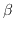

maxeig returns the maximum eigenvalue of . If this number
is negative, the equilibrium point is stable, if positive, it is
unstable. As reported in Standish (1994)[7], the mutation
drives the maximum eigenvalue slightly positive, then instabilities
act to push the eigenvalue back to zero. This command requires LAPACK).